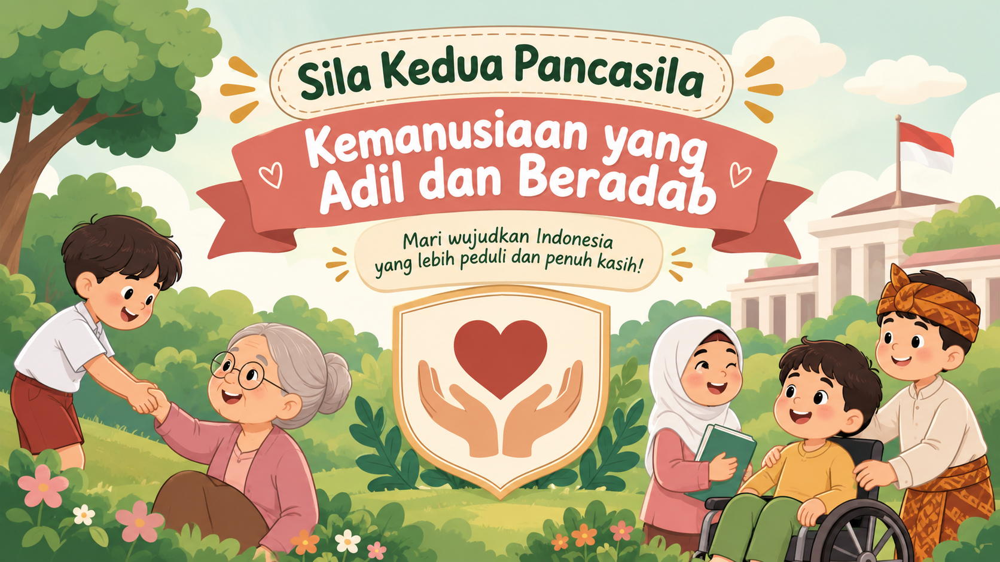

MPI PancasilaKemanusiaan yang Adil dan Beradab
sentuh mana saja untuk masuk
Halo! Siapa namamu?
Namamu dipakai untuk papan peringkat di perangkat ini.
Kemanusiaan yang Adil dan Beradab
Topik: Jujur dan Adil dalam Kehidupan Sehari-hari
Halo, ! Sila kedua Pancasila mengajak kita memperlakukan sesama manusia dengan adil dan beradab (sopan santun). Dua sikap yang bisa kita latih setiap hari adalah jujur dan adil.
Pertanyaan awal: mana yang menurutmu lebih sulit dilakukan?
🎯 Tujuan belajar
- Menjelaskan arti jujur dan adil.
- Memilih tindakan jujur dan adil dalam berbagai situasi.
- Menerapkan adab (sopan santun) saat bersikap jujur dan adil.
Apa itu Jujur?
Jujur adalah berkata dan bertindak sesuai kenyataan: tidak berbohong, tidak curang, dan tidak mengambil yang bukan hak kita.
👆 Sentuh ketiga kartu untuk menemukan contohnya.
Apa itu Adil?
Adil adalah memperlakukan orang lain dengan tepat sesuai hak dan kebutuhannya, tanpa pilih kasih.
👆 Sentuh ketiga kartu untuk menemukan contohnya.
Benar atau Salah?
Pilih jawabanmu, lalu baca penjelasannya.
Studi Kasus: Kembalian Berlebih
Jodohkan Perilaku dengan Nilainya
Ketuk satu situasi di kiri, lalu ketuk nilai yang cocok di kanan.
Urutkan Langkah: Menemukan Barang Milik Orang Lain
Ketuk langkah di kiri sesuai urutan yang benar. Ketuk langkah di kanan untuk melepasnya.
Ringkasan dan Janji Kecilku
✅
JujurBerkata dan bertindak sesuai kenyataan.⚖️
AdilMemberi hak sesuai kebutuhan, tanpa pilih kasih.🌸
BeradabBersikap sopan dan menghargai orang lain.Pilih satu janji kecil yang ingin kamu lakukan mulai hari ini:
0dari 100
🏆 Papan Peringkat
👩🏫
Pengembang Media
Ersita Sussar
PKBM Amanah Kita
Materi Pembelajaran Interaktif Pancasila ini disusun agar murid dapat belajar jujur, adil, dan beradab dengan cara yang menyenangkan.
Selesaikan kegiatan untuk melanjutkan